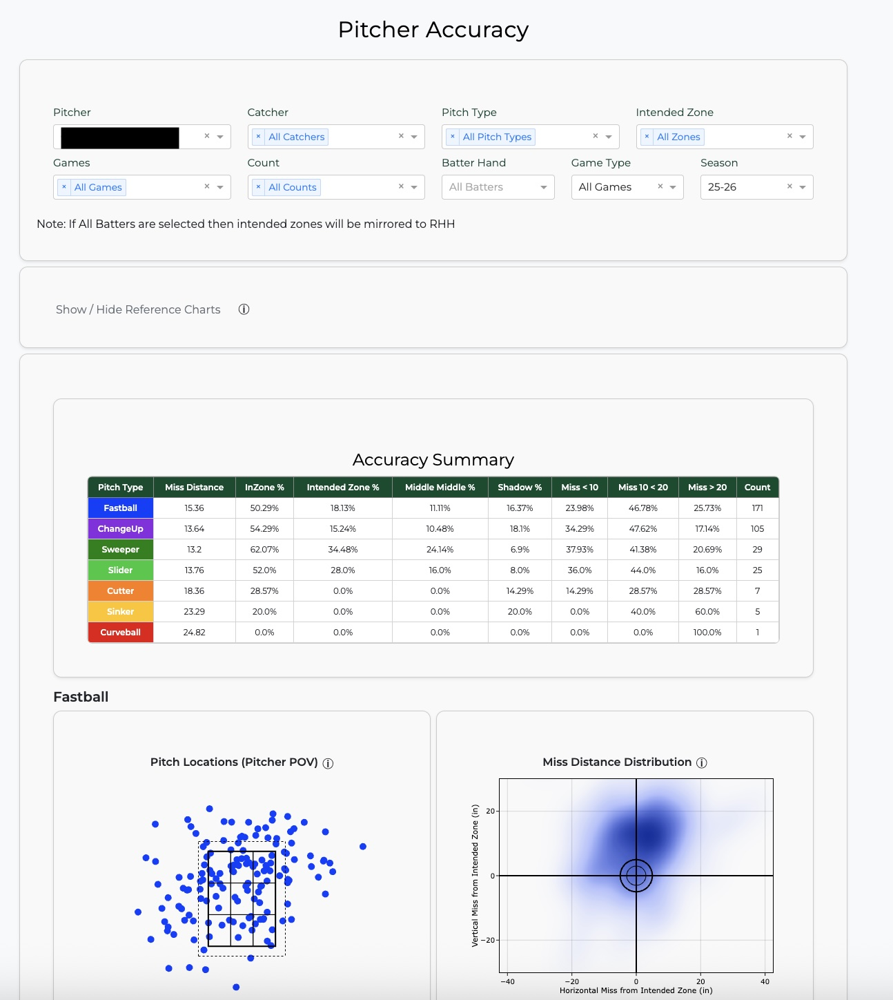
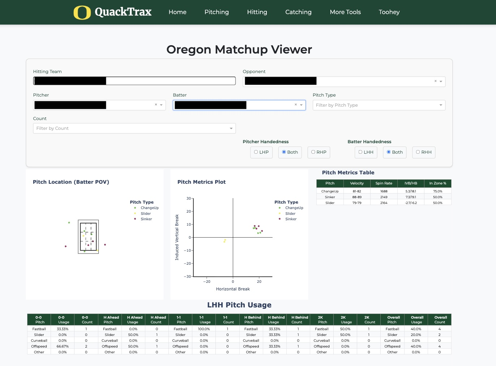
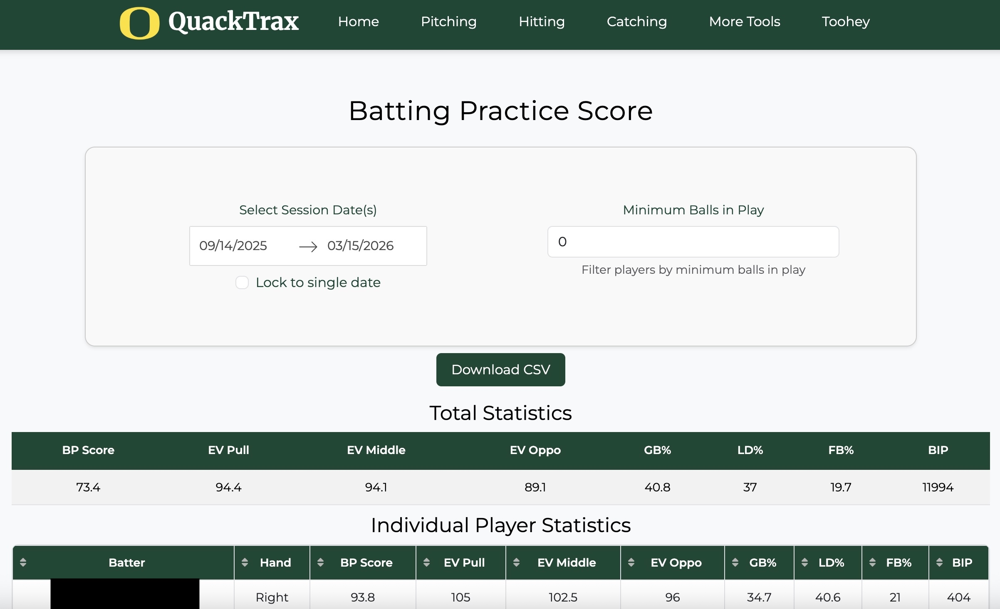
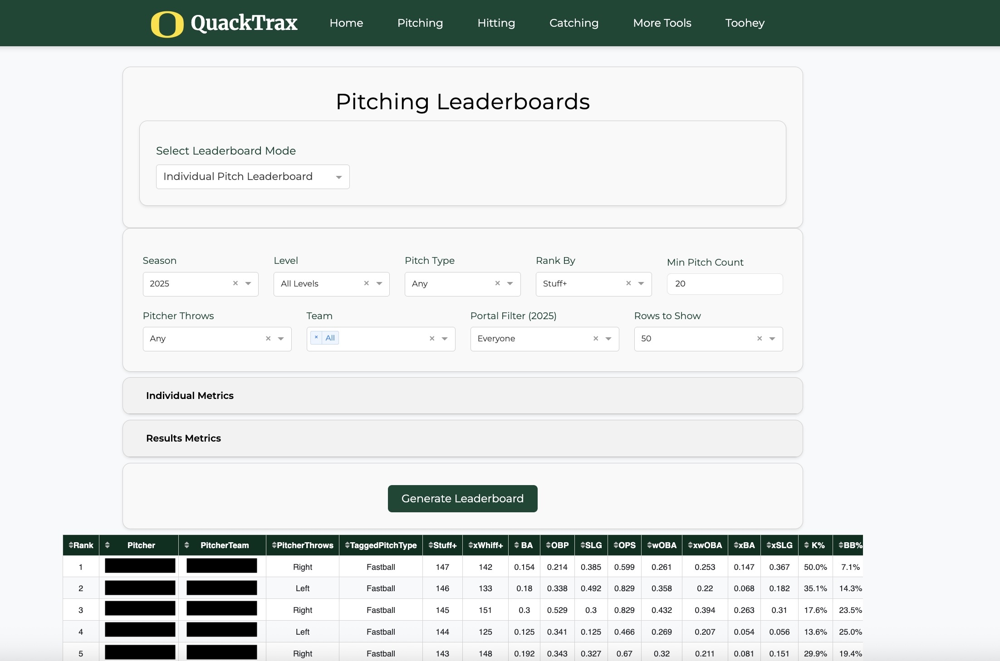

Pitch Accuracy
The Pitch Accuracy page uses data gathered by baseball analytics managers like myself during scrimmages and home games to evaluate the accuracy of each pitch thrown by a pitcher. For every pitch thrown, we use the PitchCom to record the pitcher's intended location. For each of a pitcher's pitches a scatterplot is generated showing pitch location and a KDE plot showing pitch's final location in relation to the intended zone location. In the dashboard coaches and players can filter by intended zone location and see accuracy trends for each pitch in that location.

Pitcher-Hitter Matchups
The Pitcher–Hitter Matchup page displays the historical performance of a selected pitcher against a selected hitter. Its purpose is to give coaches immediate access to how opposing pitchers have approached Oregon hitters during the current series. Providing this information in real time eliminates the need to wait for the game to be processed and uploaded to platforms like Synergy or TruMedia, enabling faster in-game and between-game adjustments.

BP Score
Worked with hitting coach to develop a BP Score metric that evaluates a hitter's batting practice performance based on Exit Velocity and Hit Locations.
Pitcher Leaderboard
Pitcher leaderboard shows top pitches, pitchers and pitching teams that can be sorted by a variety of metrics including our personal pitch model metrics, performance metrics, and expected statistics. Users are able to filter by team, level, conference, pitcher handedness, as well as a variety of individual pitch metrics and performance metrics.
